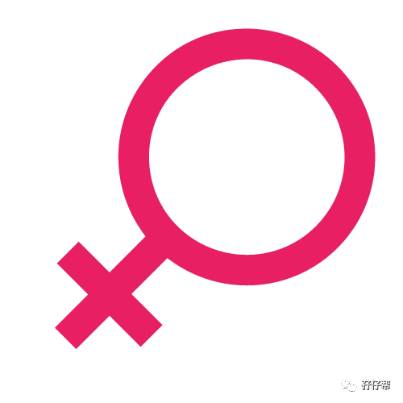
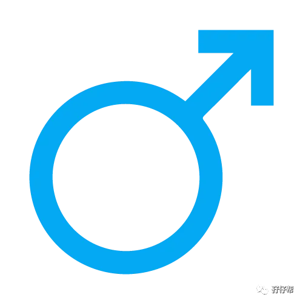
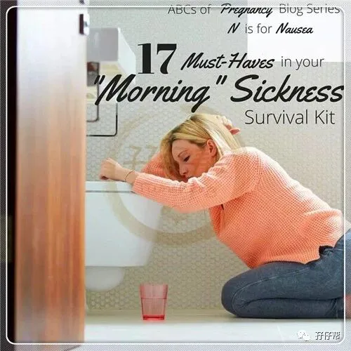
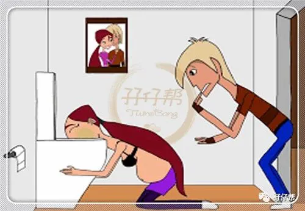

孖仔帮与您分享双胞胎育儿经
点击蓝字
关注我们
文|圆圈妈
01
凌晨，我还在挑灯码字，收到一双胎准妈妈的留言，孕吐住院了。
这么突然！明明前几天还很高兴地告诉我孕吐有所缓解的…
这位宝妈已经孕15周了，按理应该食欲恢复，胃口大开的时候。
看到她急诊发来的化验单结果，真替她捉急！因为化验结果提示电解质紊乱，酮体检查阳性3+。
须知道，酮体阳性会影响胎儿的生长发育。
我只能安慰她安心住院保胎，祝愿她早日康复回家，静养安胎。
今天想跟大家分享下我与双胎妊娠呕吐的那些骚年骚月骚日….
首先，了解一下什么妊娠呕吐。
大多数孕妇于怀孕40余天开始出现食欲不振、恶心呕吐等情况，它的发生原因还不是很清楚，约发生于70％-85％的孕妇。
50％的孕妇可能同时出现恶心和呕吐，25％孕妇仅有恶心症状，另外25％孕妇可没有任何症状。
有学者研究认为这是胎儿的正常防御反应。妊娠20-60天内，正是胚胎组织细胞分化形成器官的旺盛期，这段时间，若接触有害物质，就会造成胚胎的发育异常甚至畸形、流产、胎死宫内等症状。
而此期间孕妇也特别敏感，嗅觉非常灵敏，对于某些食物的气味、味道都会引起恶心。
也有研究者发现，此时，食物在孕妇胃部停留的时间延长了，一旦有微量有害物质，则“一吐为快”，以保障胚胎健康生长，不发生畸变。
所以说孕妇晨吐实为排毒，是避免有害物质侵害的一种积极反应。
-----以上资料来源于《母胎医学》
我的双胎早孕反应有孕吐+口水多+嗜睡，而最让人抓狂到咬牙切齿的就是孕吐环节。
可能是双胎的缘故，像我这样体格健壮的女汉子都能孕吐到怀疑人生，用排山倒海和山崩地裂的气势去形容孕吐的气场，应该不为过。
吃啥吐啥，不吃啥也要吐点啥出来，比如黄疸水…
所幸，圆圈兄弟从胚胎期就是两枚小暖男，待我不薄，并没有让我这个老母亲吐很久。
比起那些孕吐到生甚至要住院打针的宝妈，我真的是睡着都要偷笑下了。
孕9周---10周孕吐高峰期，11周开始有所缓解，13周基本不吐，15周之后彻底不吐。
孖仔帮交流群的双胎准妈妈普遍反映，一般做完NT，从13周开始，孕吐就会跟大姨妈一样逐渐消失。
每个人怀孕初期症状的情况都不一样，这和个人激素和体质有关，有的宝妈早孕反应时间比较长，直到16-18周才消失。
除了圆圈兄弟的“皇恩浩荡”我觉得跟孕妇自身的努力分不开。
孕吐跟生孩子一样，没人替得了你，而你只能靠自己了。
以下是我的过来人经验，有3招，分享给正孕吐在苦海中的双胎准妈妈。
02
1，×××，加油哦！
积极乐观的心理暗示“我要加油！”有时候是一股神奇的力量和巨大的精神支柱，可以潜移默化中解除思想顾虑，且威力无穷。
其实不止是对待孕吐，我做什么事情都习惯于先给自己打气。如果自己都没有信心，哪来的士气！
而对付双胎妊娠的早孕反应，首先就要在战略上藐视它！
我深知，孕育是一件痛并快乐的事情，没有人能帮我和替我受苦受累。
凭我上辈子拯救银河系这么大件事上，上帝不会亏待我的。这孕吐只是个小小的考验而已，我完全可以HOLD住！
事实上，每次孕吐到想割喉，我依然没有被负能量吓倒。
凭借强大的信念，我总能在圆圈爸试图安慰我的时候，扯着嗓子让他“哪里凉快哪里去！”而不是抱着他哭诉一番。
于我而言，此刻的圆圈爸就是个吃瓜群众，光看着，瞎着急都没用，关键时刻不如靠自己。不管是自我激励还是由内而外的母性使然，孕吐并没有给我多大的挫败感和无助感。
相信我，积极健康的心理暗示可以有效帮助你度过孕吐难关，此刻的你得比任何时候更坚强。
在此，又特别强调下队友的重要性。
并不是所有女人都像圆圈妈那样粗暴彪悍的，更多的宝妈则倾向于得到宝爸一句贴心的问候和一个温柔的拥抱。
因此，宝爸当然也要醒目点啦，跟宝妈一样乐观心态积极应对哦。
03
2、想吃就吃，不吃也罢！
早孕期，所有人都劝我吃清淡点，少食多餐。我只能“呵呵”，心里却在使劲画圈圈把众人藐视了N遍…
不是臣妾不吃，是压根吃不下啊！
闻着油烟味就恶心，看着食物就吐，甚至看别人吃也觉得“那人是在吃大便吗？”
（吐……）
去他大爷的合理膳食，科学饮食！
老娘想吃辣条，想吃烤串，想吃酸豆角，想吃臭豆腐…..
可以！
既然吃不下，那就别勉强了，不如按自己喜欢的口味来，好不容易有特别想吃的东西，怎能放过啊！
我非常感谢在我早孕期拯救我胃口的食物，以下排名不分先后，你们都是我的真爱。
老面馒头，不加糖的豆浆，面包干，陈皮话梅，番石榴…
其实真的很无奈，我并不鼓励孕妇吃垃圾食品，如酸豆角，腌鱼这些腌制食品，虽然下饭，增加食欲，但营养成分基本遭到破坏，还可能产生有害物质对母体和胎儿不利。
实属万不得已的情况下，适当吃点，还是OK 的。
但让人有食欲的食物并不是只有腌制食品，还是有很多酸性食物也是不错的选择。
比如西红柿、杨梅、樱桃、葡萄、桔子、猕猴桃等新鲜的菜果，不但可口，而且营养丰富。
因此，准妈妈在早孕期，可尝试多挖掘些没有吃过的美食，尝尝新鲜的东西也许可以瞬间刺激到你的味蕾，让你食欲大开哦。
04
3、走一走，怕什么！
即便我被医生宣判我是双胎妊娠的头奖得主（头奖特等奖是单绒单羊），极其高危。
即便我在孕早期就有医生千叮万嘱，要静养安胎，最好卧床少走动….BLALALA…
可我依然闲不住。
每天早晨刷牙吐完之后，感觉吃不下了，就索性不吃，喝杯温水，出去走走先，绕着附近的别墅群，走一圈（约2公里），手里拎点小食，走着走着就有想吃的欲望了。
适当运动可以改善心情，而心情好，孕吐自然就没那么可怕了。
孕吐相比生娃的十级阵痛简直微乎其微。
而准妈妈普遍反映孕吐很难受很痛苦，其实有部分原因是内心负能量的东西困扰了你，导致你情绪消极，从何把孕吐这么点小事扩大化了。
走一走，看一看，想一想….
然后，看心情吃点，接着该上班的就上班去，该在家安胎的就卧床安胎去，唯一一样的是准妈妈积极乐观的心态对待孕吐。
孖仔帮孕期群经常有宝妈问：“吃得少，吃不下，又瘦了，会不会饿坏里面那两只？”
呵呵，你想太多了！你吃进去的东西与胎儿要吸收的营养成分完全不在一个频道上。
而且，胚胎前三个月需要的营养物质较少，准妈妈身上储备的营养物质足够满足早孕期胚胎的营养需求。
当然，孕妇自身得身体素质好，够强壮哦。
这就是为什么提倡孕前要科学备孕，都是为了孕期做前期的准备！
孕前准妈妈体质越好，越能满足到两宝宝胚胎期的营养物质，且绰绰有余，想瘦都难！
因此，如果实在吃不下或者吃进去又吐出来，就不要太勉强了。
在饮食上尽力而为即可，不必因为吃少了有负罪感。
05
妊娠呕吐是正常的生理现象，通常对健康没多大影响，双胎妊娠可能会有程度不一的加倍反应，一般都不需要治疗。
当然有例外，出现妊娠剧吐的概率小于2%， 刚提到的那位宝妈恰恰就是2%人群中的一名。
希望你不是那个2%的人群之一。
如果孕吐非常严重，那要及时就医。
孕吐是否严重，个人的主观想法与医院的指标化验还是有差别的，若自身感觉不舒服，扛不住，别犹豫了，上医院去吧！
圆圈妈这篇巧治孕吐的招颇有点心灵鸡汤的赶脚，希望这碗鸡汤能喝下去别吐出来哈！
其实哪来那么多废话啊，关键是准妈妈端正心态啦，吃好睡好才有力气吐。
难道不是吗？
谨以此文献给众多在孕吐前线上浴血奋战的准妈妈，并捎来圆圈妈的一点点福音：你们不是孤军奋战的，包括我在内都是这么熬过来的。
哪怕孕吐到最后只剩下一口仙气，只要两胎儿依然在腹中静待足月，你就是胜利者！
关于双胞胎妈妈早孕期的注意事项，孖仔帮前几期推文有提到，详情请参考文章《经验分享|双胞胎妈妈如何顺利度过早孕期》，关注孖仔帮，对话框输入数字“211”即可阅读。
END
本文系圆圈妈sgguy-com原创，来源于孖仔帮，专注双胞胎孕期育儿经验分享，著作权归孖仔帮所有。
长按识别二维码关注我们
我猜你肯定喜欢看下面的文章，对不对嘛？关注孖仔帮，回复下方文章前面的数字编号即可阅读。
105:同卵双胞胎的天敌--双胞胎输血综合征
201:双胞胎与唐氏筛查---美丽的邂逅
212:原来双胎妈妈可以这样数胎动，好简单啊
215:双胎子宫日记系列|（下）你看不看？双胞胎妈妈直播剖腹产全过程
302:喂养干货||如何训练双胞胎宝宝睡整夜觉
306: 真人示范！双胞胎妈妈高难度喂母乳技巧
404:双胞胎家庭生存技巧01：舍不得孩子套不住狼，新生入园开学季必备
714:那个每天晚上9点钟才到家的双胎妈妈，失业了…
219双胞胎准爸爸的生存指南：不做猪一样的队友，活着出来喜当爹
220双胞胎准妈妈，其实你的产检方式一直搞错了…
222:看过这份最简单的双胞胎宝宝用品囤货清单，其他的都是将就
近日发现有些平台未经允许转载了圆圈妈的文章，在此声明下：
若喜欢圆圈妈的文章，无条件欢迎大家分享转发到朋友圈。
如需转载至公众号请联系圆圈妈（微信sgguy-com）授权，或扫以下微信二维码。
更多孖仔帮双胞胎原创育儿文章请猛戳 "阅读原文" ，或者直接上圆圈妈的个人博客。
博客链接：https://www.sgguy.com/twinsbang




